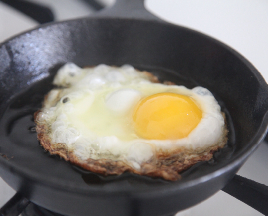

Spanish Fried Egg

Description
I don't even remember where I picked this up, but it's delicious. The crispy edges, which a lot of people say are terrible on eggs, actually hold craggles of flavor that I find irresistable.
On top of rice, with tortillas, or on bread, you can't go wrong with this crispy breakfast (or any time really!) treat.
Ingredients
- An egg
- Cooking oil of your choosing
- Seasoning
- Carbohydrate of choice
Steps
- Heat a heavy pan (preferably cast iron) over high heat.
- Once heated, add enough oil to create a quarter to half-inch layer in the pan.
- Once oil is shimmering (or smoking), crack the egg directly into the pan. Add salt and pepper to taste
- Spoon oil over the top of the egg to cook the whites. You can choose to spoon oil on the yolk or not, depending on your preference.
- Remove from pan once top of egg is cooked. The bottom should separate smoothly, and be a crispy golden brown.
- Eat with your carb of choice, garnish with sauce if desired. I recommend rice, but toast, or tortillas and beans are good too!
Home